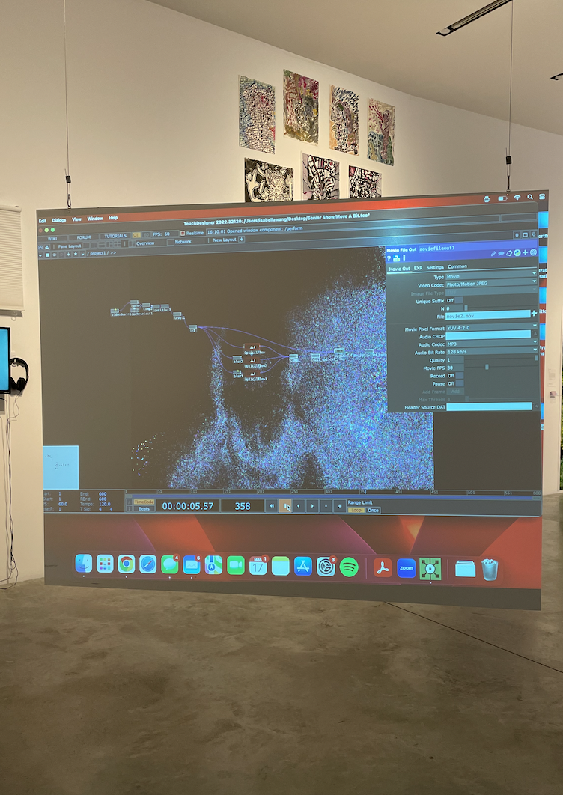
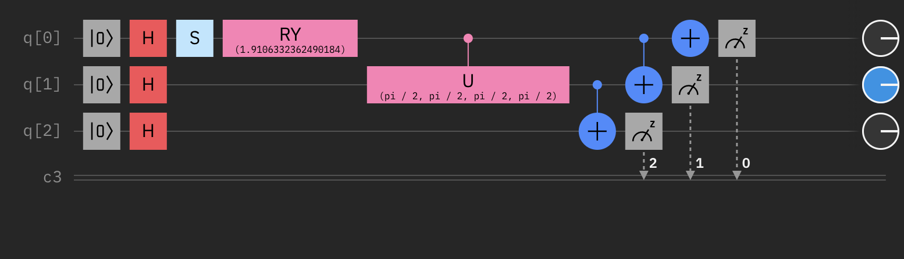
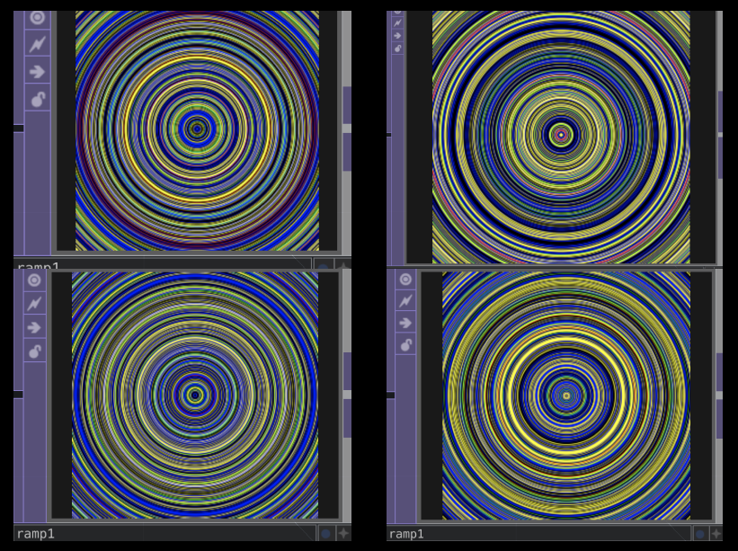
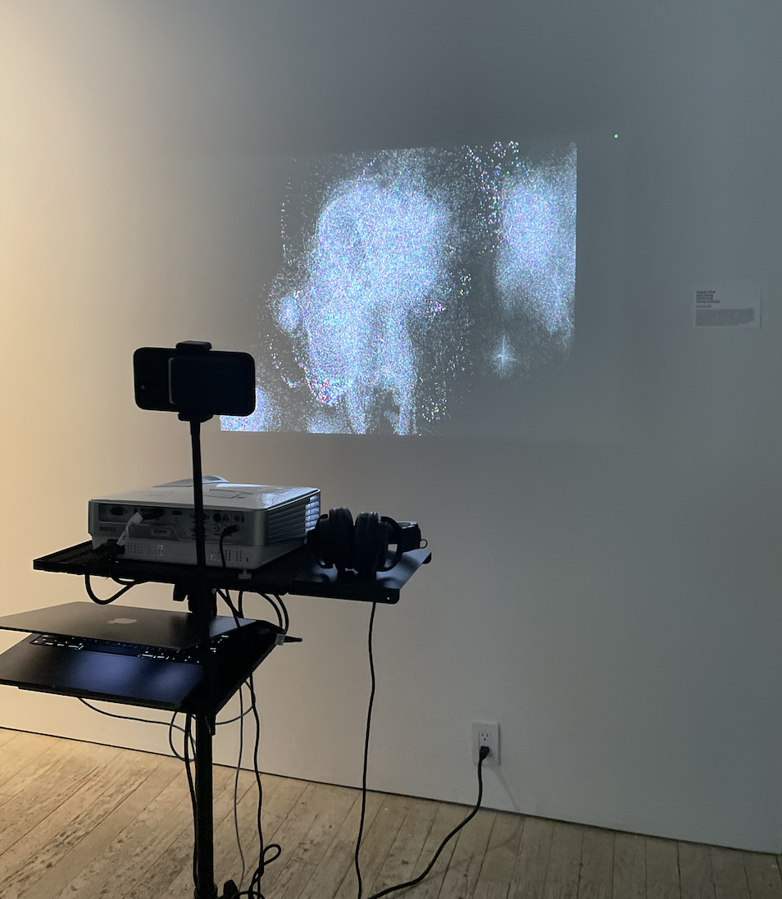
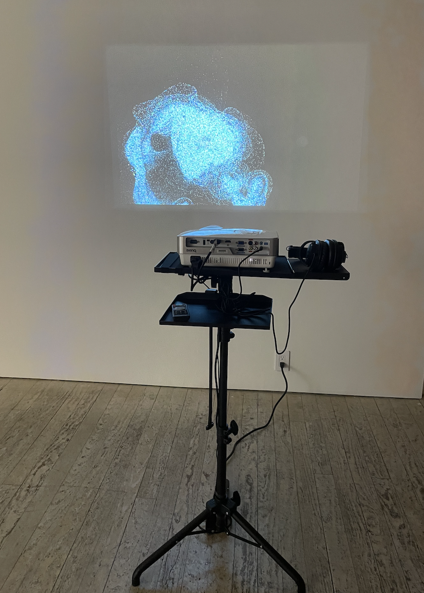
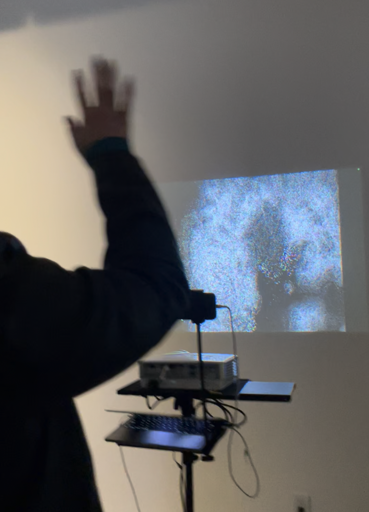

Move a Bit
COLLABORATORS: Isabella Wang, Kalinda Panholzer, Youn Hwang, Si Ran Pang
PROJECT ROLE: Researcher, Creative Technologist
TOOLKIT: Python, TouchDesigner, Projection Mapping
Quantum Computing
Motion Capture
Interactive Installation
Design Problem
How can we create an interactive art experience that visualizes quantum states in real-time at the intersection of quantum physics and art? This design problem required addressing several key challenges: making quantum entanglement comprehensible through visual representation, translating abstract quantum data (qubit states, superposition, noise) into an engaging visual language that invites exploration, and designing a gallery-ready experience that visitors of varying technical backgrounds can interact with meaningfully.
Quantum Entanglement
Move a Bit is a live motion capture project showcasing quantum entanglement and the messiness of quantum noise. Quantum entanglement suggests that there is a special correlation between qubits and quantum systems. Just as there is a special correlation between qubits, the particles in Move-a-Bit have a special correlation with the subject in motion. Movement produces the quantum state with all the quantum possibilities represented in different colors. Stillness represents the observed collapsed, classical state. Essentially a system which is entangled with you and exists only when you move.
Entanglement with the system
The core innovation of Move a Bit lies in its translation of the quantum observer effect into embodied experience. In quantum mechanics, observation fundamentally alters the state of a system—collapsing superposition into a definite state. We mapped this principle directly onto human presence and movement: motion generates quantum entanglement (represented by particles in multiple color states), while stillness triggers observation and collapse into a classical, definite state.



This creates an intuitive parallel between participant and observer. When you move, you're actively entangled with the quantum system. Raise your arm, and particles burst into superposition. Hold still, and they settle into classical certainty. The particles don't exist independently; they emerge from and respond to your physical presence.
The immediate feedback loop was crucial. There's no delay between gesture and quantum response. To achieve this effect, we use a live camera feed in TouchDesigner combined with quantum data generated through IBM's Qiskit platform, creating an interactive experience that brings quantum entanglement to life through motion. To generate the quantum data to guide the properties of our motion-reactive particles, we used the quantum concept of W-state to entangle three qubits.

The three qubit value shots were then used to control the RGB color values of the particles. These particles are generated using particle systems in TouchDesigner. The particles that aren't of the original RGB colors (red: (1,0,0), green: (0,1,0), blue: (0,0,1)) are a demonstration of quantum noise, or quantum computation errors.




The experience teaches through doing, transforming intimidating quantum concepts into something playful and accessible. This project was done as part of a collaboration between Parsons School of Design and IBM Quantum.
Special Thanks
-
-
To Maya Georgiva for organizing the exhibition and for her
support and feedback on the project.
-
To Russel Hoffman and Brian Ingmanson from IBM for sharing
their knowledge and expertise on quantum computing.
-
To IBM for giving us this opportunity to learn and create
this project.
-
To Microscope Gallery for hosting the exhibition.